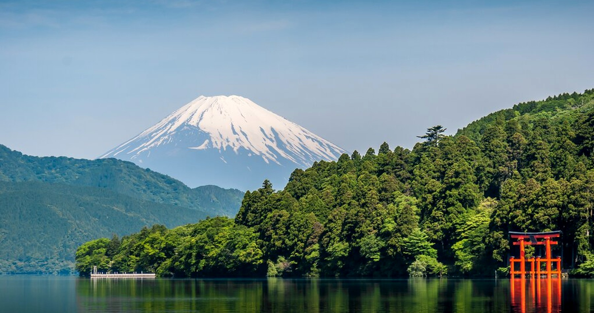

🌏✈️ CREATE MEMORIES
Trip length
Until departure
4Cities
6–13°CMarch average
Per person
TRIP OVERVIEW
Your route at a glance
ITINERARY
Each day, beautifully organised
STAY
Hotel recommendations by city
FOOD
What to eat
ATTRACTIONS
What not to miss
WEATHER
March planning guide
6–9°C
HeatTech or knit layer10–13°C
Light or medium coat3–7°C
Warmer in Hakone and TakayamaTRAVEL HUB
Everything under control
10%
Update through Google SheetsRM5,550
Spent so far0%
Start closer to departure6 legs
Reserve Hakone, Takayama and Shirakawa-go